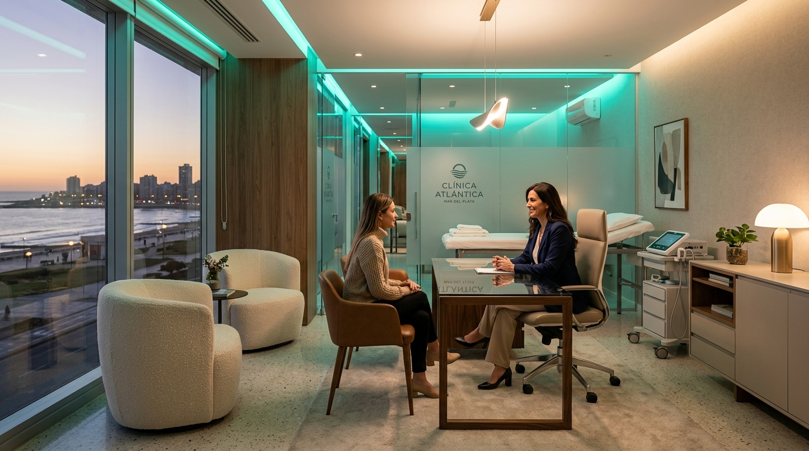

Consultorios externos de especialidades, diagnóstico por imágenes de última generación y guardia permanente. Cuidamos tu salud y la de tu familia con tecnología de precisión y profesionales certificados.

Infraestructura clínica luminosa y moderna equipada para diagnósticos certeros y tratamientos personalizados.
Monitoreo cardiovascular integral, ergometrías de 12 derivaciones, Holter 24hs, MAPA y ecocardiografía con Doppler color en tiempo real.
Ecografía general, 4D/5D ginecológica y obstétrica, radiología digital de baja radiación y mamografía de alta resolución.
Acompañamiento del recién nacido, controles periódicos de crecimiento y desarrollo, y cartilla completa de vacunación oficial.
Tratamiento de lesiones osteoarticulares, columna, miembros superiores e inferiores, y rehabilitación deportiva acelerada.
Bioquímica clínica, perfiles hormonales, marcadores oncológicos e inmunología. Resultados online confidenciales.
Configurá tu consulta médica en 3 simples pasos. Al confirmar, tu solicitud se derivará con prioridad a la central de admisiones de WhatsApp.
Profesionales de trayectoria y formación continua para brindarte la mejor atención médica.
Atención directa por cartilla sin cobros adicionales indebidos.
Ubicados en una zona estratégica de fácil acceso vehicular y con múltiples líneas de transporte en la puerta.